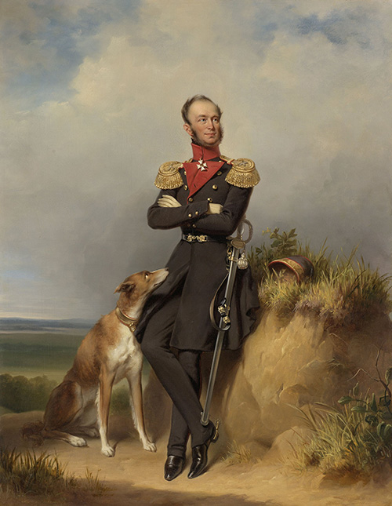
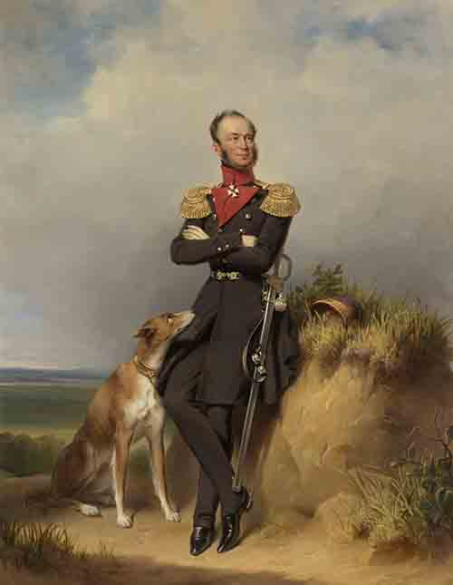
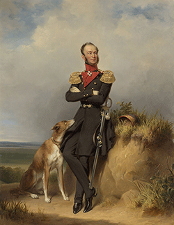
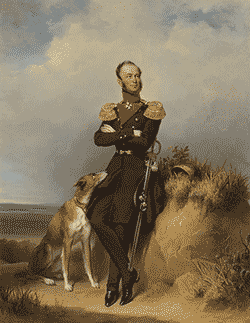

Image Comparisons
JPG Quality

100 Quality [125 KB]
50 Quality [25 KB]

10 Quality [5 KB]
PNG Bit Depth

256 colors [52 KB]
256 colors [52 KB]
256 colors [52 KB]
256 colors [52 KB]

256 colors [52 KB]
Raster Resizing
Original Size [350 x 188]
File Size 4KB
Original Size [525 x 282]
File Size 4KB
Original Size [175 x 94]
File Size 4KB
Vector resizing
Original Size [175 x 94]
File Size 5KB
Original Size [350 x 188]
File Size 5KB
Original Size [525 x 282]
File Size 5KB